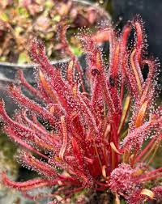
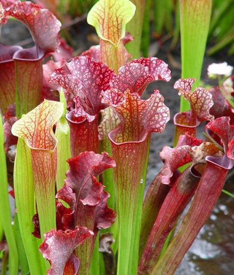
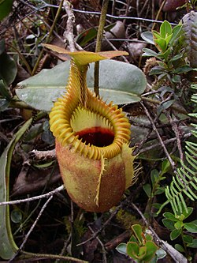

DROSERA CAPENSIS
Todo lo que tenes que saber para el cuidado de las plantas carnivoras
También conocida como «rocío de sol». Es una planta carnívora, la más popular en su especie por ser muy resistente y de fácil cultivo. Es originaria de Sudáfrica, en la Ciudad del Cabo.
Atrapa sus propias presas
Es una planta perenne, tiene hojas cubiertas con pelos con mucílago, sustancia pegajosa que tiene por función atrapar a los insectos que luego serán digeridos por enzimas. Al contacto se produce una reacción que curva la hoja y envuelve la presa. Esta escena dura unas horas en tiempo real y ocurre en pleno verano cuando las temperaturas son altas. Atrae presas pequeñas, fundamentalemnte insectos. Luego de que las toca la presa queda atrapada en el pegajoso mucílago que les impide escapar, más tarde el insecto morira a medida que el mucílago lo envuelve y tapa sus espriráculos. Las enzimas lo digieren y liberan sus nutrientes que luego serán absorvidos por la superficie de la hoja. Mide hasta treinta centímetros de altura y es muy fácil de cultivar. Sus flores son blancas y dispuestos a pico, florecen y se marchitan, a su vez, una tras otra.
Reproducción
Se poliniza ella sola pero si se quiere se puede hacer manualmente. Después de haberla polinizado la flor perderá sus pétalos y comenzará a producir sus semillas. Estas se pueden recolectar cuando el tallo floral se haya secado, en ese momento se coloca un papelito debajo de la flor y se y sacude un poco hasta que las semillas caigan. En ese momento son perfectamente aptas para la siembra, en caso contrario se deben conservar en un lugar seco y fresco. Hay que tener en cuenta también que las semillas van perdiendo efectividad conforme pasa el tiempo, o sea que lo mejor es sembrarlas cuanto antes.
Cultivo
Temporada de cultivo es de abril a octubre. En la temporada de invierno, la Drosera capensis no necesita de un verdadero descanso, resiste muy bien a temperaturas muy bajas durante largos períodos. Durante el invierno se puede cultivar en dos formas diferentes: Con el clima frío: hay que dejar la planta fuera para que pierda completamente las hojas, las cuales vuelven a crecer en la primavera siguiente. Con bajas temperaturas (5 ° -10 °) deben colocarse en áreas protegidas donde la planta continuará creciendo mientras se mantiene el follaje. Con este último método, a lo largo de los años, la planta tendrá una palmeta forma bonita. Drosera capensis puede ser reproducida fácilmente por varios métodos, incluyendo semillas, esquejes de hoja y división del rizoma. Además, es una de las variedades que no requiere un periodo de hibernación. Esta planta es una de las más fáciles en lo que a cultivo se refiere. Crece muy bien en lugares abiertos, donde disponga de luz indirecta y sea regada con agua con bajo contenido mineral. No requiere invernaderos pero puede ser cultivada también en ellos. No tiene periodo de dormancia, a diferencia de otras especies del género. A comienzos del verano, Drosera capensis alba produce varias flores, pequeñas, de cinco pétalos color rosa en el extremo de un tallo floral, el cual puede tener hasta 30 centímetros de alto. Las flores se abren individualmente por la mañana y se cierran al atardecer, durando cada una solo un día; las primeras flores en formarse pueden comenzar a abrirse mientras todavía se siguen formando flores en el tallo floral. Se autopolinizan tras cerrarse y producen una gran cantidad de pequeñas semillas, las cuales caen del capullo una vez seco. En condiciones favorables, estas semillas tienden a volar y depositarse en las proximidades dándole la reputación de planta de crecimiento y reproducción muy sencillo.
Consejos
No exponer al sol directo, solo durante el invierno es aconsejable un poco de sol de la mañana o tarde. (la luz solar directa deseca las trampas y disminuye su capacidad de captura) No es necesario proveerles insectos. No tocar las trampas pues esto disminuirá su capacidad de caza. No debe regarse nunca con agua corriente, de pozo ni mineral. Nunca agregar ningún tipo de fertilizante o abono. Usar solo sustrato para plantas carnívoras
No exponer a insecticidas o productos agresivosSarracenia
Las Sarracenia son plantas carnívoras indígenas del este de Estados Unidos, desde el este de Texas al área de los Grandes Lagos y sudeste del Canadá, con la mayoría creciendo en el sudeste de los Estados Unidos (solo S. purpurea crece en regiones con temperaturas templadas). Las hojas de las plantas forman recipientes para atrapar insectos, por eso son llamadas plantas odres. Producen enzimas para digerir su presa. Los insectos son atraídos por la secreción de néctar así como una combinación de olores y colores. Los insectos caen en el interior, no pueden escapar y la planta se alimenta de ellos. La planta tiene proteasas y otras enzimas para la digestión de sus presas.
Nepenthes
Nepenthes (del griego νηπενθής, nepenthés, ‘que disipa el dolor’), género de planta carnívora, conocida popularmente como plantas jarra o copas de mono. Es el único género de la familia Nepenthaceae. Son plantas oriundas de las regiones tropicales del Viejo Mundo. Se distribuyen por China meridional, Indonesia1, Malasia y las Filipinas; oeste de Madagascar (2 especies); Seychelles (1 especie); hacia el sur hasta Australia (3 especies) y Nueva Caledonia (1 especie); teniendo como límite septentrional la India (1 especie) y Sri Lanka (1 especie).
La mayor diversidad se encuentra en Borneo y Sumatra con gran número de especies endémicas. Muchas son plantas de áreas bajas de clima húmedo y cálido, aunque la mayoría son tropicales de montaña, que vegetan en condiciones de días cálidos y noches entre frescas a frías y húmedas durante todo el año. Unas pocas se consideran alpinas tropicales con días frescos y noches por debajo de cero. El nombre copas de monos se refiere al hecho de que se ha observado a los monos bebiendo agua de lluvia de ellas.
Existen tres tipos de Nepenthes:
- LowLand, que traducido significa de tierras bajas, esto significa que estas especies pueden aguantar temperaturas desde 25 °C hasta los 35 °C y una buena humedad ambiental. Estas se caracterizan por ser un poco más pequeñas y anchas, también tienen colores vividos.
- MidLand, que traducido significa tierras medias, al igual que las LowLand sus hojas tienen que estar siempre bien humectadas. Estas puede tener un rango más amplio de temperatura, desde los 15 °C hasta los 30 °C, este tipo de Nepenthes son de un tono rojizo y más alargadas y pueden crecer más que las de Lowland
- HighLand, que significa tierras altas, puede aguantar temperaturas desde los 10 °C hasta los 20 °C, estas se caracterizan por ser muy largas y poco anchas con colores opacos.